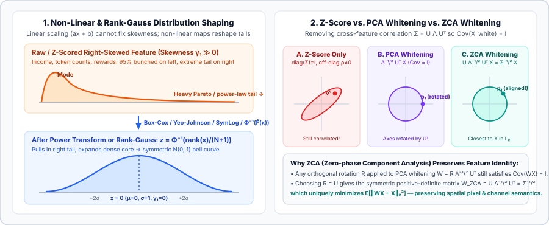

Non-Linear, Rank, and Whitening Normalizations: Log, Box-Cox, Yeo-Johnson, Quantile, and ZCA Whitening
Affine scalers ($x' = ax + b$) only shift and stretch an axis—they cannot fix heavy-tailed skewness or remove cross-feature correlations. Derive Log1p and SymLog transforms, Box-Cox and Yeo-Johnson power normalizations, empirical-CDF Rank-Gauss / Quantile normalization, and multivariate PCA vs. ZCA whitening.
In Chapter 01 we saw that Min-Max scaling, Z-score standardization, and Robust IQR scaling are all 1D affine maps $x' = ax + b$ ($a > 0$). That linearity carries two fundamental limitations: first, for any $a > 0$, the standardized third moment (skewness $\gamma_1 = \mathbb E[((x-\mu)/\sigma)^3]$) and fourth moment (kurtosis $\kappa = \mathbb E[((x-\mu)/\sigma)^4]$) are strictly invariant under $ax + b$. A Pareto-distributed income or token-frequency column remains just as skewed after Z-scoring as before! Second, normalizing each column’s marginal variance $\Sigma_{jj} = 1$ leaves off-diagonal covariances $\Sigma_{jk}$ ($j \ne k$) untouched, so strongly correlated features still create elongated elliptical loss valleys along diagonal directions.
1. Logarithmic ($\log(1+x)$), Square-Root, and SymLog Normalization
When a feature spans multiple orders of magnitude (e.g., housing prices, web traffic, word counts, molecular weights, or reinforcement learning returns), its standard deviation typically grows proportionally to its mean ($\sigma_X \propto \mu_X$). By a first-order Taylor expansion (the delta method), a smooth non-linear transform $Y = g(X)$ has approximate variance
- Proportional noise ($\sigma_X = c\,\mu_X$, multiplicative/log-normal processes): To make $\operatorname{Var}(g(X))$ constant (variance stabilization), we need $g'(\mu) \propto 1/\mu \implies g(x) = \ln(x)$. Because real features often include zeros, we use the shifted Log1p transform:
$$x_{\text{log}}' = \ln(1 + x), \qquad x \ge 0.$$
- Poisson / count noise ($\sigma_X^2 = \mu_X$, photon or word counts): Variance stabilization requires $g'(\mu) \propto \mu^{-1/2} \implies g(x) = 2\sqrt{x}$ (or the Anscombe transform $2\sqrt{x + 3/8}$).
- Bilateral heavy tails ($x \in \mathbb R$, positive and negative spikes): Standard $\ln(1+x)$ fails for $x \le -1$. Modern deep RL and world models (such as DreamerV3, Hafner et al., 2023) normalize targets, rewards, and observations across wildly varying domains without domain-specific hyperparameter tuning using the Symmetric Logarithm (`symlog`) and its exact inverse `symexp`:
$$\operatorname{symlog}(x) = \operatorname{sign}(x)\ln(1 + |x|),\qquad \operatorname{symexp}(y) = \operatorname{sign}(y)\big(e^{|y|} - 1\big).$$Near the origin ($|x| \ll 1$), $\operatorname{symlog}(x) \approx x$ behaves linearly with unit slope $\frac{d}{dx}\operatorname{symlog}(0) = 1$; for large $|x| \gg 1$, it compresses both positive and negative extremes logarithmically.

2. Parametric Power Transforms: Box-Cox and Yeo-Johnson
Instead of guessing whether to apply $\ln(x)$, $\sqrt{x}$, or $1/x$, Power Transforms unify the entire power family into a single continuous parameter $\lambda \in \mathbb R$ fit directly from the training set via Maximum Likelihood Estimation (MLE).
For strictly positive features ($x_i > 0$), the Box-Cox Transform (Box & Cox, 1964) is defined as:
Subtracting $1$ and dividing by $\lambda$ makes $x_i^{(\lambda)}$ continuous in $\lambda$ at $\lambda = 0$: by L’Hôpital’s rule, $\lim_{\lambda\to 0}\frac{x^\lambda - 1}{\lambda} = \lim_{\lambda\to 0} x^\lambda \ln(x) = \ln(x)$. Special values of $\lambda$ recover standard transforms: $\lambda = 1$ (linear shift), $\lambda = 0.5$ (square root), $\lambda = 0$ (log), and $\lambda = -1$ (reciprocal).
When a feature can take zero or negative values ($x_i \in \mathbb R$), the Yeo-Johnson Transform (Yeo & Johnson, 2000; default in `sklearn.preprocessing.PowerTransformer`) smoothly pieces together positive and negative power curves with continuous first and second derivatives at $x = 0$:
How $\lambda$ is learned (the Change-of-Variables Jacobian): Why can’t we just pick $\lambda$ by minimizing the sample variance of $x^{(\lambda)}$? Because shrinking $x^{(\lambda)}$ artificially toward zero would trivially win unless we account for how $x \mapsto x^{(\lambda)}$ stretches volume! Under the Gaussian model $x_i^{(\lambda)} \sim \mathcal N(\mu, \sigma^2)$, the probability density of the original data $x_i$ includes the Jacobian determinant $\left|\frac{dx_i^{(\lambda)}}{dx_i}\right| = x_i^{\lambda - 1}$ (for Box-Cox). Maximizing the log-likelihood over $\mu, \sigma^2$ yields the profile log-likelihood for $\lambda$:
which is maximized via 1D Brent optimization on $\mathcal D_{\text{train}}$, followed by Z-score standardization of $x^{(\lambda)}$.
3. Quantile Normalization & Rank-Gauss (`QuantileTransformer`)
What if a feature is multimodal, heavily zero-inflated, or follows a bizarre empirical distribution that no single power parameter $\lambda$ can make Gaussian? Quantile Normalization (known in tabular deep learning and Kaggle competitions as Rank-Gauss) uses the probability integral transform:
- Step 1 — Map to Uniform $(0, 1)$ via Empirical CDF (Rank): Sort the $N$ training values of feature $j$ and compute each point’s normalized rank (using Blom’s or Hazen’s plotting position to avoid $0$ and $1$ where $\Phi^{-1}$ diverges):
$$u_i = \hat F_j(x_i) = \frac{\operatorname{rank}(x_i) - 0.5}{N} \in (0, 1).$$By definition, $u_1,\dots,u_N$ are spaced uniformly across $(0, 1)$, completely eliminating arbitrary outlier gaps!
- Step 2 — Map to Standard Normal $\mathcal N(0, 1)$ via Inverse Probit $\Phi^{-1}$: Apply the inverse standard normal CDF $\Phi^{-1}(u) = \sqrt{2}\,\operatorname{erf}^{-1}(2u - 1)$:
$$z_i = \Phi^{-1}\!\big(\hat F_j(x_i)\big) \sim \mathcal N(0, 1).$$
In bioinformatics and high-throughput genomics (microarrays and RNA-seq), Bolstad Multi-Sample Quantile Normalization (Bolstad et al., 2003) forces an entire gene-by-sample matrix $X \in \mathbb R^{G \times S}$ to share the exact same empirical distribution across all samples: (1) sort each column independently, (2) average across rows of the sorted matrix to get the reference quantile vector $\bar q \in \mathbb R^G$, and (3) replace each entry in every column with the reference quantile $\bar q_r$ corresponding to its within-column rank $r$.
4. Multivariate Decorrelation: PCA Whitening vs. ZCA (Mahalanobis) Whitening
All methods above operate column by column (marginally). Suppose $X \in \mathbb R^{N \times d}$ has already been mean-centered ($\mu = 0$). Its empirical covariance matrix is $\Sigma = \frac{1}{N}X^\top X \in \mathbb R^{d \times d}$. A vector $z = Wx$ is whitened (sphered) if its covariance matrix is the exact identity matrix:
Since $\Sigma$ is symmetric positive semi-definite, its eigendecomposition is $\Sigma = U\Lambda U^\top$, where $U^\top U = U U^\top = I_d$ (orthonormal eigenvectors) and $\Lambda = \operatorname{diag}(\lambda_1,\dots,\lambda_d)$. Any matrix of the form
satisfies $W\Sigma W^\top \approx R\Lambda^{-1/2}U^\top (U\Lambda U^\top) U\Lambda^{-1/2}R^\top = R R^\top = I_d$. Which orthogonal rotation $R$ should we choose?
- 1. PCA Whitening ($R = I_d$):
$$W_{\text{PCA}} = (\Lambda + \varepsilon I)^{-1/2} U^\top,\qquad x_{\text{PCA}} = (\Lambda + \varepsilon I)^{-1/2} U^\top x.$$PCA whitening first rotates $x$ into the principal-component eigenbasis via $U^\top x$ and then divides each principal axis $k$ by $\sqrt{\lambda_k + \varepsilon}$. While $\operatorname{Cov}(x_{\text{PCA}}) = I_d$, the coordinate axes have been rotated: coordinate $k$ of $x_{\text{PCA}}$ is a global linear combination of all features, destroying spatial locality (e.g. a 2D image stops looking like an image, so convolutional kernels can no longer exploit local translation invariance!).
- 2. ZCA Whitening / Zero-Phase Component Analysis ($R = U$):
$$W_{\text{ZCA}} = U(\Lambda + \varepsilon I)^{-1/2} U^\top = (\Sigma + \varepsilon I)^{-1/2},\qquad x_{\text{ZCA}} = (\Sigma + \varepsilon I)^{-1/2} x.$$By rotating back to the original coordinate system with $U$, $W_{\text{ZCA}} = \Sigma^{-1/2}$ is the unique symmetric positive-definite matrix square root of $\Sigma^{-1}$. Furthermore (Kessy, Lewin, & Strimmer, 2018), among all whitening transforms $W = R\Lambda^{-1/2}U^\top$, setting $R = U$ uniquely minimizes the expected squared Euclidean distortion between the raw input $x$ and whitened output $Wx$:$$\arg\min_{W:\,\operatorname{Cov}(Wx)=I} \mathbb E\!\left[\|Wx - x\|_2^2\right] = U\Lambda^{-1/2}U^\top = \Sigma^{-1/2} = W_{\text{ZCA}}.$$Because ZCA whitening keeps every pixel or channel aligned with its original physical coordinate while removing local spatial correlations, it is a classic preprocessing step for natural image patches (e.g., CIFAR-10, Coates et al., 2011) and directly inspired Decorrelated Batch Normalization (DBN) (Huang et al., CVPR 2018), which applies ZCA whitening to intermediate CNN activations inside mini-batches!
5. Compare SymLog, Yeo-Johnson, Rank-Gauss, and ZCA Whitening in Python
import torch
import math
torch.manual_seed(0)
# 1. SymLog and SymExp (DreamerV3 bilateral compression)
def symlog(x: torch.Tensor) -> torch.Tensor:
return torch.sign(x) * torch.log1p(torch.abs(x))
def symexp(y: torch.Tensor) -> torch.Tensor:
return torch.sign(y) * (torch.expm1(torch.abs(y)))
# 2. Non-parametric Rank-Gauss (Quantile -> N(0, 1)) per column
def rank_gauss(x: torch.Tensor) -> torch.Tensor:
N = x.shape[0]
ranks = torch.argsort(torch.argsort(x, dim=0), dim=0).float() + 1.0
u = (ranks - 0.5) / N # Blom/Hazen empirical CDF in (0, 1)
return math.sqrt(2.0) * torch.erfinv(2.0 * u - 1.0)
# 3. Multivariate ZCA Whitening vs PCA Whitening
def zca_whiten(X: torch.Tensor, eps: float = 1e-5):
mu = X.mean(dim=0, keepdim=True)
Xc = X - mu
cov = (Xc.T @ Xc) / X.shape[0]
eigvals, U = torch.linalg.eigh(cov) # cov = U @ diag(eigvals) @ U.T
inv_sqrt = torch.diag((eigvals.clamp(min=0.0) + eps).rsqrt())
W_pca = inv_sqrt @ U.T
W_zca = U @ inv_sqrt @ U.T
return Xc @ W_pca.T, Xc @ W_zca.T
X_corr = torch.randn(500, 4) @ torch.tensor([[2.0, 1.8, 0.0, 0.0],
[1.8, 2.0, 0.5, 0.0],
[0.0, 0.5, 1.0, 0.9],
[0.0, 0.0, 0.9, 1.0]])
X_pca, X_zca = zca_whiten(X_corr)
print("ZCA covariance diagonal:", ((X_zca.T @ X_zca) / len(X_zca)).diag().round(decimals=3).tolist())
print("Distortion ||X_pca - X||_F:", (X_pca - X_corr).norm().item())
print("Distortion ||X_zca - X||_F:", (X_zca - X_corr).norm().item(), "(strictly smaller!)")6. Questions worth answering
Because Rank-Gauss depends only on the ordinal ranks $\operatorname{rank}(x_i)$, it destroys metric distance ratios: if $x_{N-1} = 10$ and $x_N = 10{,}000$, Rank-Gauss places $x_{N-1}$ and $x_N$ only one quantile step apart ($u_{N-1} = \frac{N-1.5}{N}$ vs. $u_N = \frac{N-0.5}{N}$). If the true physical magnitude of an extreme value carries proportional signal (e.g., predicting total portfolio loss from position size), use `symlog` or Yeo-Johnson rather than Rank-Gauss.
When features are nearly collinear or represent high-frequency spatial modes in natural images, the smallest eigenvalues $\lambda_k$ of $\Sigma$ approach $0$. Dividing by $\sqrt{\lambda_k} \approx 0$ amplifies sensor noise along those low-variance directions by $1/\sqrt{\lambda_k} \to \infty$. Adding a small regularization constant $\varepsilon \in [10^{-5}, 10^{-2}]$ bounds the maximum amplification factor by $1/\sqrt{\varepsilon}$.
Computing $\Sigma \in \mathbb R^{C\times C}$ and its eigendecomposition or Newton-Schulz inverse square root $\Sigma^{-1/2}$ costs $\mathcal O(C^3)$ flops per layer (plus cross-channel synchronization), whereas standard diagonal BatchNorm/LayerNorm costs only $\mathcal O(C)$ flops and lets the subsequent learned weight matrix $W_{l+1}$ mix channels freely.
Sources
Box and Cox, An Analysis of Transformations (JRSS-B, 1964); Yeo and Johnson, A New Family of Power Transformations to Improve Normality or Symmetry (Biometrika, 2000); Bolstad et al., A Comparison of Normalization Methods for High Density Oligonucleotide Array Data (Bioinformatics, 2003); Kessy, Lewin, and Strimmer, Optimal Whitening and Decorrelation (The American Statistician, 2018); Huang et al., Decorrelated Batch Normalization (CVPR 2018); Hafner et al., Mastering Diverse Domains through World Models — DreamerV3 SymLog (2023).